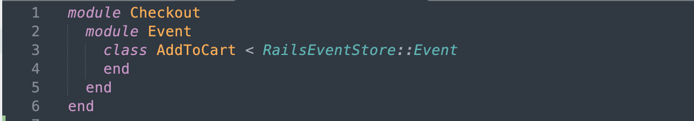
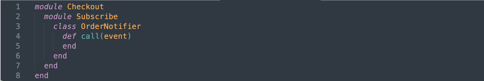

Rails Event Store is a library for publishing, consuming, storing and retrieving events
Also ...
Event Example
Notifier Example

::Checkout::Event::AddToCart.new(
data: {
order: order.as_json,
variant: line_item.variant.as_json,
taxons: line_item.variant.product.taxons,
quantity: line_item.quantity
}
)
::Customer::Event::PdpVisit.new(
data: {
product: product.name,
taxons: product.taxons
}
)